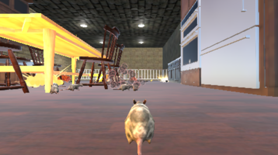

Behind the Scenes: How We Built CheeseChompers3D
Published on 2025-04-29
Ever wondered what goes into creating a game like CheeseChompers3D? Join us as we take you behind the scenes, sharing the story, the challenges, and the technology that brought our cheesy adventure to life.
Ever wondered what goes into making a 3D browser game? In this post, we share the story of CheeseChompers3D's development, from the first concept to the final release.
- Inspiration: We wanted to create a fun, accessible game for all ages that could run smoothly on any device.
- Challenges: Building 3D graphics for the web and optimizing performance for both desktop and mobile was no easy task!
- Technology: The game uses modern web technologies and lots of creative problem-solving.
- Community: Feedback from players helped us polish and improve the experience.
We hope you enjoy playing as much as we enjoyed building CheeseChompers3D. Stay tuned for more updates and features!
← Back to Blog